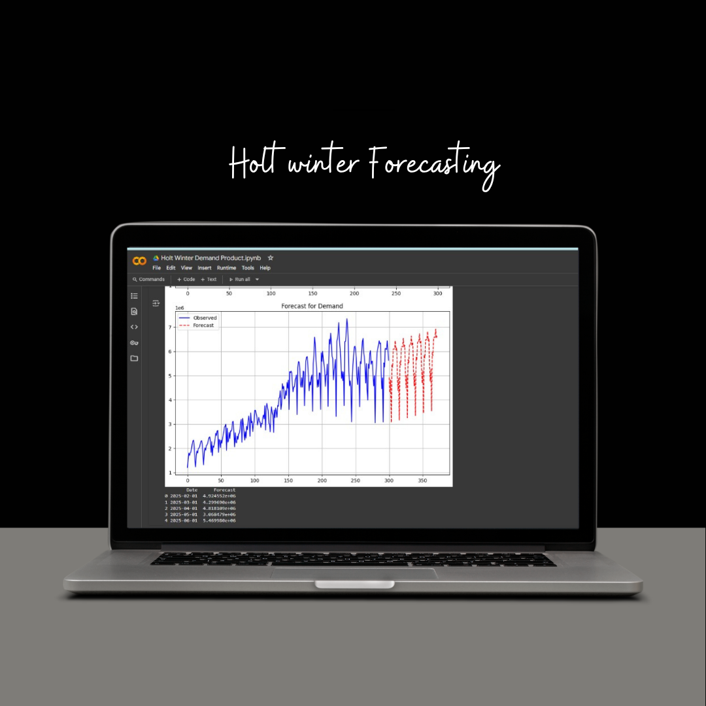
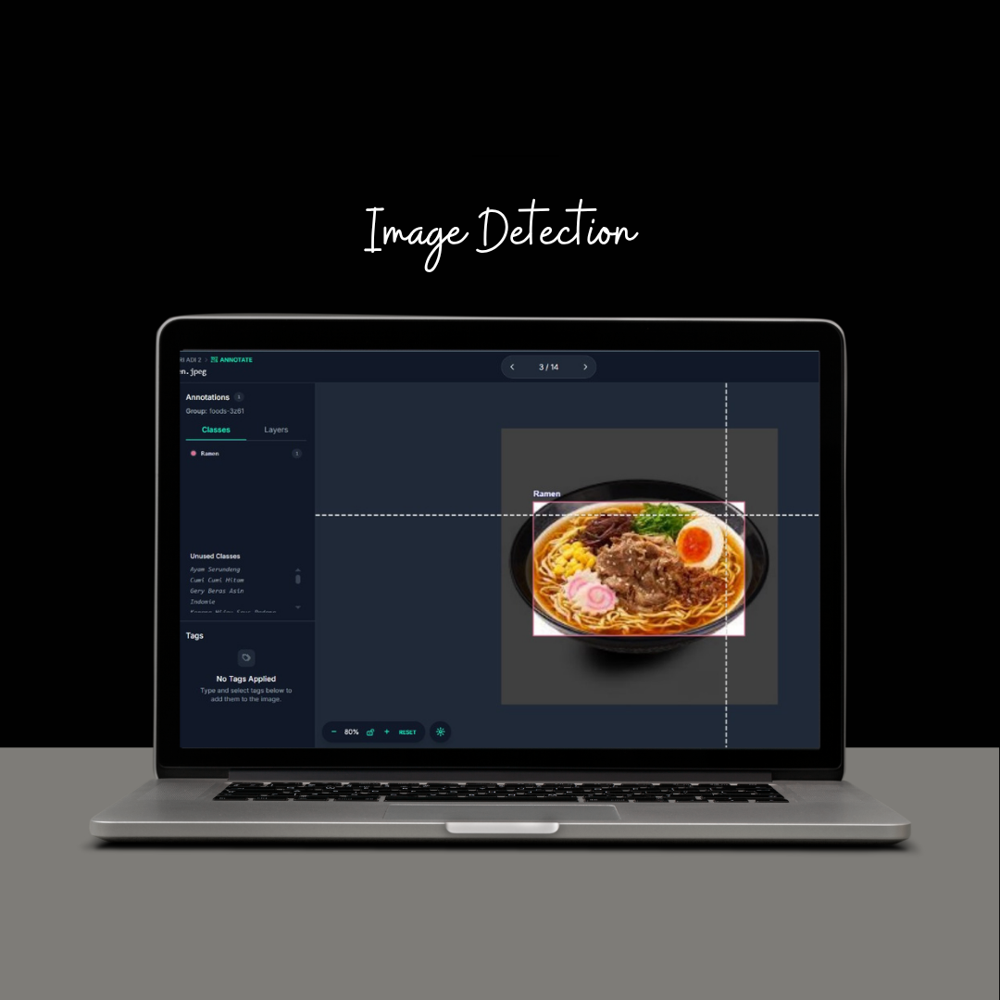
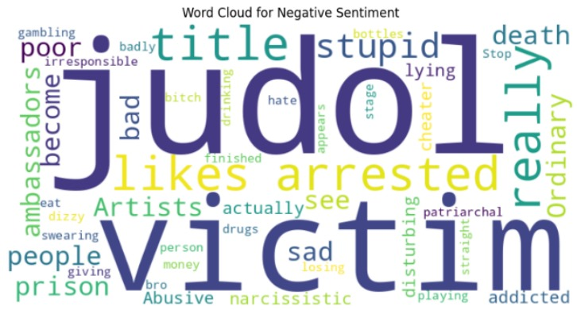
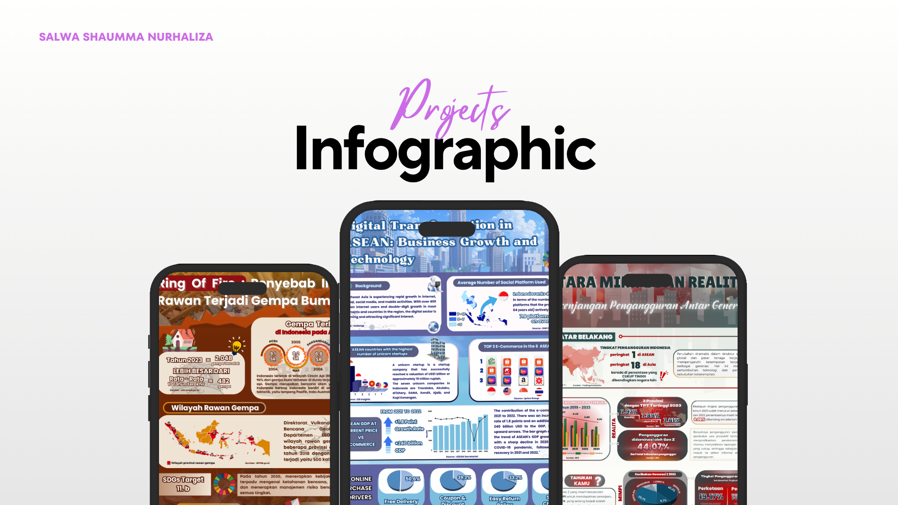
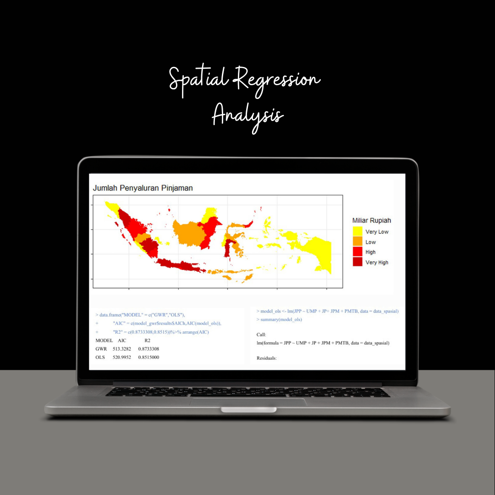

🌐 My Projects
📊 Clustering Settlement Quality in Indonesia

Click to view more!
📈 Experimental Design & ANOVA in R

Click to view more!
📉 Forecasting Demand with Holt-Winters
Click to view more!
🍱 Food Detection Using YOLOv5
Click to view more!
🧠 Sentiment Analysis of Online Gambling in Indonesia
Click to view more!
🎨 Infographic Design
Click to view more!
🌍 Spatial Regression of Online Gambling in Indonesia (GWR)
Click to view more!
🌍 Real-Time Tactical Demand Monitoring with Power BI

Click to view more!
🌍 Financial Fraud Gap: Global vs Indonesia
Click to view more!
📊 Clustering Settlement Quality in Indonesia

My first scientific article was published on 11th September 2023. This project evaluates indicators of settlement quality, sanitation and water access across various provinces in Indonesia in 2023. The method focuses on comparing hierarchical and non-hierarchical clustering, using R Studio software for the analysis.
📈 Infographic Projects
 >
>
Some infographic works that I created for competitions and university projects. I combined my imagination with statistical data visualization, covering diverse themes such as economics, disaster impact, and environmental issues.
📈 Real-Time Tactical Demand Monitoring with Power BI

This project was completed during my internship at PT Semen Indonesia as part of the Market Analyst team. I developed an interactive Power BI dashboard to monitor monthly tactical demand versus actual realization from January to April across multiple distribution areas. The dashboard enables stakeholders to evaluate performance gaps efficiently and make data-driven decisions.
📈 Financial Fraud Gap: Global vs Indonesia

This project explores the readiness gap between Indonesia and global standards in cybersecurity. By benchmarking frameworks such as the NIST and Global Cybersecurity Index (GCI), the analysis highlights Indonesia’s current position in terms of infrastructure, policy, and incident response. The goal is to identify key improvement areas to enhance national cyber resilience.